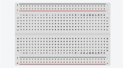
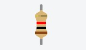
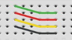

Introdução
No seguinte resumo vão ser apresentados alguns conceitos básicos sobre Arduino e terá um passo a passo de como fazer um primeiro projeto. Tomei a iniciativa de ensinar de uma forma mais didática, para até uma pessoa que nunca tenha tocado ou mesmo visto um Arduino na vida saiba como utilizá-lo, vão conter imagens 3Ds os componentes utilizados e o código. Tudo vai ser feito de uma maneira bem dinâmica e divertida para que você goste e posteriormente crie gosto e comece a utilizar Arduinos.
1.1 Introdução
O resumo a seguir inicia com uma introdução básica sobre Arduino, como montar o hardware e o software. O projeto vai iniciar com uma descrição de como montar o hardware e o código necessário para que ele funcione. Tudo será explicado passo a passo de uma forma simples e clara, contendo fotos para que você entenda e consiga acompanhar facilmente e corretamente.
1.2 - Do que você necessita
Para você ser capaz de fazer os projetos vai precisar de certos componentes. Evidentemente você necessitará de uma placa de Arduino original ou poderá utilizar umas das muitas placas-clone que existem por aí. Você deverá ter acesso a internet para poder fazer o download do IDE do Arduino que é o software utilizado para escrever seu código. Você também necessitará de uma mesa para dispor seus equipamentos, se for de metal lembre-se de cobrir ela com uma toalha ou papel porque lembre-se que você está trabalhando com eletricidade (mesmo que seja de baixa voltagem). Tenha por perto um alicate de ponta fina mesmo que não seja essencial, e um desencapador de fios.
1.3 - O que é um Arduino?
Em termos simples, um Arduino é um pequeno computador que você pode programar para processar entradas e saídas entre os dispositivos e os componentes conectados ao mesmo (Figura 1). Um simples teste utilizando apenas o Arduino, seria programar ele para acender uma luz por 5 segundos, passados os 5 segundos a luz desligaria e esperaria mais 5 segundos para acender de novo. Esse seria apenas um teste entre milhares.

Figura 1 - Arduino Uno.
O Arduino pode ser conectado a diversos outros componentes externos como: LEDs (Figura 2), botões, motores, interruptores ou qualquer outro dispositivo que possa ser controlado ou emita dados.

Figura 2 - Experimento com um resistor e um LED.
Uma placa Arduíno é composta, basicamente, por um controlador Atmel AVR de 8 bits, uma interface serial ou USB e alguns pinos digitais e analógicos. Assim, a partir desses componentes, ela pode servir tanto para o desenvolvimento de projetos interativos como ser conectada a um outro computador. Para programá-lo, você utiliza o IDE do Arduino, um software livre onde você escreve o código na linguagem que o Arduino compreende (baseada na linguagem C).
1.4 - Primeiros passos
Neste segmento explicarei como configurar seu Arduino e o IDE pela primeira vez. As instruções são para Windows, caso você esteja utilizando Mac ou Linux consulte as instruções no site do Arduino. As instruções são baseadas para que você esteja utilizando um Arduino Uno, caso esteja usando uma placa diferente, consulte o site do Arduino para maiores informações. Você também precisará de um cabo USB, para ligar a placa ao seu computador. A seguir faça download do IDE do Arduino, no software que você utilizará para escrever seus programas.
Instalação no Windows XP
Assim que você tiver feito o download do IDE mais recente, descompacte o arquivo e clique duas vezes na pasta descompactada para abri-la. Você verá os arquivos do Arduino e suas subpastas. A seguir, conecte seu Arduino utilizando o cabo USB e verifique se o LED verde de energia (PWR) acende. O Windows avisará “Novo hardware encontrado: Arduino” e o Assistente de instalação de novo hardware será exibido. Clique Avançar e o Windows tentará carregar os drivers. Esse processo falhará, mas não se preocupe, isso é normal. Em seguida, clique com o botão direito no ícone Meu Computador em seu Desktop e escolha Gerenciar. A janela de Gerenciamento do Computador abrirá. Agora, desça até o Gerenciador de Dispositivos, na lista Ferramentas do Sistema, e clique nele. Na janela, à direita, você verá uma lista de seus dispositivos. O Arduino Uno fará parte dessa lista com um ponto de exclamação amarelo sobre ele, para indicar que o dispositivo não foi instalado corretamente. Clique com o botão direito sobre esse ícone e escolha “Atualizar Driver”. Escolha “Não, não agora” na primeira página e clique em Avançar. Então, escolha “Instalar de uma lista ou local específico (avançado)” e clique novamente em Avançar. Agora clique em “Incluir este local na pesquisa” e clique em Procurar. Navegue até a pasta Drivers do IDE descompactado do Arduino e clique em Avançar. O Windows instalará o driver e você poderá, então, clicar no botão Concluir. O Arduino Uno agora será exibido na opção Portas (COM & LPT), na lista de dispositivos, e mostrará o número de porta atribuído a ele (por exemplo, COM6). Para abrir o IDE, clique duas vezes no ícone do Arduino em sua pasta.
Instalação no Windows 7 e Vista
Assim que você tiver feito o download do IDE mais recente, descompacte o arquivo e clique duas vezes na pasta descompactada para abri-la. Você verá os arquivos do Arduino e suas subpastas. A seguir, conecte seu Arduino utilizando o cabo USB e verifique se o LED verde de energia (PWR) acende. O Windows tentará instalar automaticamente os drivers para o Arduino Uno e falhará. Isso é normal, por isso, não se preocupe. Clique no botão Iniciar do Windows e depois em Painel de Controle. Agora, clique em Sistema e Segurança, depois em Sistema e, então, em Gerenciador de Dispositivos, na lista, no lado esquerdo. O Arduino fará parte da lista como um dispositivo com um ponto de exclamação amarelo sobre ele, para mostrar que não foi instalado corretamente. Clique com o botão direito no Arduino Uno e escolha Atualizar driver. Depois, escolha Procurar software de driver no computador e, na janela seguinte, clique no botão Procurar. Navegue até a pasta Drivers dentro da pasta Arduino que você descompactou antes e clique em OK, e depois em Avançar. O Windows tentará instalar o driver. Uma caixa de segurança do Windows será exibida afirmando que o “Windows não pode verificar o editor deste software de driver”. Clique em Instalar driver mesmo assim. A janela de instalação fará o necessário. Se tudo der certo, você terá outra janela dizendo que o software de driver foi atualizado com êxito. Finalmente, clique em Fechar. Para abrir o IDE, clique duas vezes no ícone do Arduino em sua pasta.
1.5 - Seleção de placa e porta
Assim que você abrir o IDE, ele terá um visual semelhante ao da figura 3.

Figura 3 - IDE do Arduino quando aberto pela primeira vez.
Agora, vá ao menu e clique em Tools. Então, clique em Board. (Figura 4)

Figura 4 - Menu Tools do Arduino.
Você será apresentado a uma lista de placas (Figura 5). Se você tiver uma Uno, escolha de acordo. Se tiver uma Duemilanove, ou outra variante do Arduino, escolha a opção apropriada a partir dessa lista. A seguir, clique no menu Tools novamente. Em seguida, clique em Serial Port e escolha na lista a porta apropriada para seu Arduino (Figura 6). Você agora está pronto para fazer o upload de um sketch de exemplo e testar se a instalação deu certo.

Figura 5 - Menu Boards do Arduino.

Figura 6 - Lista Serial Port.
1.6 - Upload de seu primeiro sketch
Agora que você instalou os drivers e o IDE, e tem a placa e a porta correta selecionadas, é o momento de fazer o upload de um sketch de exemplo para o Arduino e testar se tudo está funcionando corretamente, antes de avançar ao seu primeiro projeto. Primeiro, clique no menu File (Figura 7) e depois em Examples.

Figura 7 - Menu File
Você será apresentado a uma enorme lista de exemplos. Vamos experimentar um bem simples. Clique em Basics e depois em Blink (Figura 8). O sketch Blink será carregado no IDE. Depois, clique no botão Upload (o sexto botão a partir da esquerda) e olhe para seu Arduino. (Se você tem um Arduino Mini, NG ou outra placa, pode ser necessário apertar o botão reset na placa antes de apertar o botão Upload). As luzes RX e TX devem começar a piscar para mostrar que os dados estão sendo transmitidos de seu computador para a placa. Assim que o upload do sketch tiver sido feito, as palavras “Done uploading” (upload completo) serão exibidas na barra de status do IDE e as luzes RX e TX pararão de piscar.

Figura 8 - Menu Examples.
Depois de alguns segundos, você deverá ver que o LED do pino 13 (o pequenino LED ao lado dos LEDs RX e TX) começa a piscar, acendendo e apagando em intervalos de um segundo. Se isso estiver acontecendo, você conectou seu Arduino, instalou os drivers e o software, e fez o upload de um sketch de exemplo com êxito. O sketch Blink é um sketch muito simples que pisca o LED 13 (Figura 9), o pequenino LED verde (ou laranja) soldado na placa (e que também está conectado ao pino digital 13 do microcontrolador).

Figura 9 - LED 13 piscando.
2 - Acendendo as Luzes
Projeto 1 - LED piscante
Para esse primeiro projeto você utilizará o sketch que utilizou no estágio de testes. Mas dessa vez você conectará um LED a um dos pinos digitais.
Componentes necessários
Protoboard

LED de 5 mm
Resistor

Fios Jumper

Conectando os componentes
Certifique-se de que seu Arduino está desconectado do cabo USB. Agora, pegue sua Protoboard, o LED, o resistor e os fios, e conecte tudo como na figura 10.

Figura 10 - Circuito para o Projeto 1 - LED piscante.
Certifique-se de que o LED esteja conectado corretamente, com o fio mais longo conectado ao pino digital 10. O fio longo é o ânodo do LED e deve sempre ir para a alimentação de +5V ; o fio curto é o cátodo e deve ir para o terra (GND). Quando você tiver certeza de que está tudo conectado corretamente, ligue seu Arduino e conecte o cabo USB.
2.1 - Digite o código
Código para o projeto 1
// Projeto 1 - LED piscante
int ledPin = 10;
void setup() {
pinMode(ledPin, OUTPUT);
}
void loop() {
digitalWrite(ledPin, HIGH);
delay(1000);
digitalWrite(ledPin, LOW);
delay(1000);
}
Caso tenha feito tudo corretamente o LED deverá acender e apagar em um intervalo de um segundo.
Vamos analisar o código para descobrir como funciona.
Projeto 1 - LED piscante - Análise do código
Seguindo a estrutura do programa passo a passo você pode ver que é muito simples:
// Projeto 1 - LED piscante
int ledPin = 10;
void setup() {
pinMode(ledPin, OUTPUT);
}
void loop() {
digitalWrite(ledPin, HIGH);
delay(1000);
digitalWrite(ledPin, LOW);
delay(1000);
}
Você inicia atribuindo uma variável ledPin, e dando a ela um valor de 10. Depois, avança para a função setup(), na qual você define o modo para o pino digital 10 como saída. No loop principal do programa, você define o pino digital 10 como HIGH, enviando a ele 5 V. Então, espera por um segundo e desliga os 5 V, antes de esperar mais um segundo. O loop então reinicia desde o princípio: o LED acenderá e apagará continuamente, enquanto o Arduino tiver energia.
Referências:
Michael McRoberts. Arduino Básico. Primeira edição. Novatec Editora Ltda. 2011.